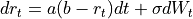
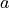
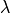
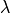

quantlib.models.shortrate.onefactormodels.vasicek.Vasicek¶
- class Vasicek(Rate r0, Real a=0, Real b=0, Real sigma=0, Real Lambda=0)¶
Bases:
OneFactorAffineModelVasicek model
defined by

where ,
 and
and  are constants.
A risk premium  can also be specified.
are constants.
A risk premium  can also be specified.- __init__(*args, **kwargs)¶
Methods
__init__(*args, **kwargs)discount_bound(self, Time now, ...)params(self)set_params(self, Array params)Attributes
Lambdaabdynamicssigma